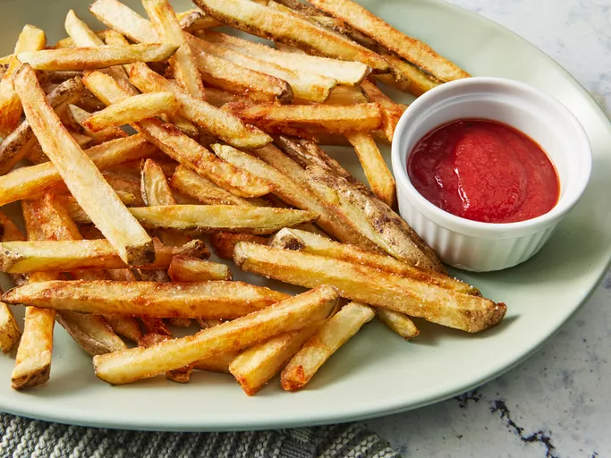

Home
French Fries

Description Heading
Learn how to make French fries that are
super crispy with this twice-fried method.
The first frying is done at a lower temperature,
which softens the potato and prepares the starchy surface
for the second frying's crispification.
Ingredients
- 1 large russet potato, cut into evenly sized strips
- vegetable oil for frying, about 2 cups or as needed
- salt to taste
Steps
- Soak potato strips in a large bowl of water for about 30 minutes.
- Pat with paper towels until thoroughly dry.
- Heat oil in a deep-fryer or large saucepan to 275 degrees F (135 degrees C).
Gently add potatoes to the hot oil and fry for about 5 minutes,
stirring and flipping the potatoes occasionally.
- Use a slotted spoon to transfer potatoes to a paper towel-lined plate.
Let cool completely.
- Heat oil again, but this time to 350 degrees F (175 degrees C).
Add potatoes and fry a second time until golden brown, 5 to 6 minutes.
- Remove from the deep-fryer and blot with a paper towel.
Sprinkle with salt to serve.
- Enjoy!
Reference:
Chef John's French Fries (How to Make)